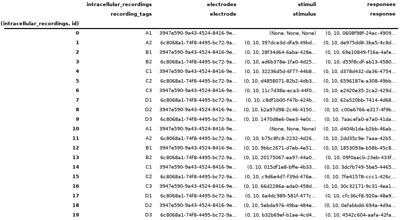
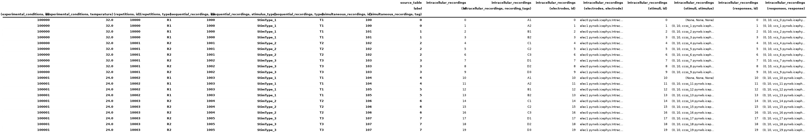
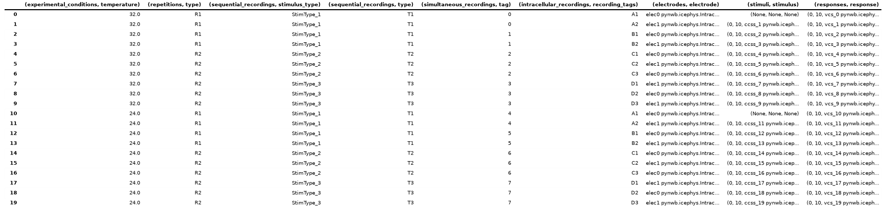
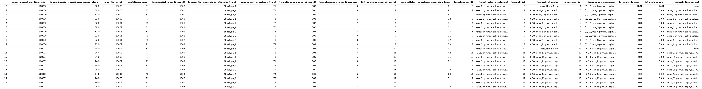
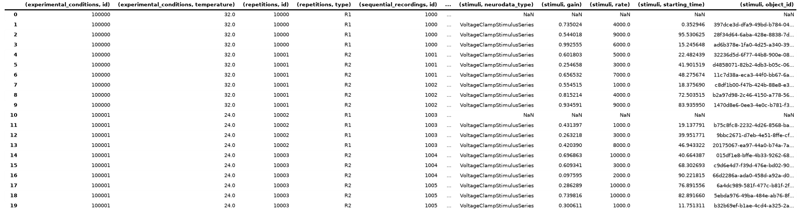
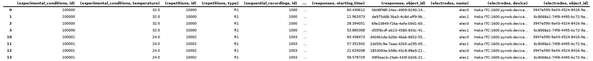

Note
Go to the end to download the full example code.
Query Intracellular Electrophysiology Metadata
This tutorial focuses on using pandas to query experiment metadata for
intracellular electrophysiology experiments using the metadata tables
from the icephys module. See the Intracellular Electrophysiology
tutorial for an introduction to the intracellular electrophysiology metadata
tables and how to create an NWBFile for intracellular electrophysiology data.
Note
To enhance display of large pandas DataFrames, we save and render large tables as images in this tutorial. Simply click on the rendered table to view the full-size image.
Imports used in the tutorial
import os
Settings for improving rendering of tables in the online tutorial
import dataframe_image
# Standard Python imports
import numpy as np
import pandas
# Get the path to the this tutorial
try:
tutorial_path = os.path.abspath(__file__) # when running as a .py
except NameError:
tutorial_path = os.path.abspath("__file__") # when running as a script or notebook
# directory to save rendered dataframe images for display
df_basedir = os.path.abspath(
os.path.join(
os.path.dirname(tutorial_path), "../../source/tutorials/domain/images/"
)
)
# Create the image directory. This is necessary only for gallery tests on GitHub
# but not for normal doc builds the output path already exists
os.makedirs(df_basedir, exist_ok=True)
# Set rendering options for tables
pandas.set_option("display.max_colwidth", 30)
pandas.set_option("display.max_rows", 10)
pandas.set_option("display.max_columns", 6)
pandas.set_option("display.colheader_justify", "right")
dfi_fontsize = 7 # Fontsize to use when rendering with dataframe_image
Example setup
Generate a simple example NWBFile with dummy intracellular electrophysiology data.
This example uses a utility function create_icephys_testfile
to create a dummy NWB file with random icephys data.
from pynwb.testing.icephys_testutils import create_icephys_testfile
test_filename = "icephys_pandas_testfile.nwb"
nwbfile = create_icephys_testfile(
filename=test_filename, # Write the file to disk for testing
add_custom_columns=True, # Add a custom column to each metadata table
randomize_data=True, # Randomize the data in the simulus and response
with_missing_stimulus=True, # Don't include the stimulus for row 0 and 10
)
Accessing the ICEphys metadata tables
Get the parent metadata table
The intracellular electrophysiology metadata consists of a hierarchy of DynamicTables, i.e.,
ExperimentalConditionsTable –>
RepetitionsTable –>
SequentialRecordingsTable –>
SimultaneousRecordingsTable –>
IntracellularRecordingsTable.
However, in a given NWBFile, not all tables may exist - a user may choose
to exclude tables from the top of the hierarchy (e.g., a file may only contain
SimultaneousRecordingsTable and IntracellularRecordingsTable
while omitting all of the other tables that are higher in the hierarchy).
To provide a consistent interface for users, PyNWB allows us to easily locate the table
that defines the root of the table hierarchy via the function
get_icephys_meta_parent_table.
root_table = nwbfile.get_icephys_meta_parent_table()
print(root_table.neurodata_type)
ExperimentalConditionsTable
Getting a specific ICEphys metadata table
We can retrieve any of the ICEphys metadata tables via the corresponding properties of NWBFile, i.e.,
intracellular_recordings,
icephys_simultaneous_recordings,
icephys_sequential_recordings,
icephys_repetitions,
icephys_experimental_conditions.
The property will be None if the file does not contain the corresponding table.
As such we can also easily check if a NWBFile contains a particular ICEphys metadata table via, e.g.:
nwbfile.icephys_sequential_recordings is not None
True
Warning
Always use the NWBFile properties rather than the
corresponding get methods if you only want to retrieve the ICEphys metadata tables.
The get methods (e.g., get_icephys_simultaneous_recordings)
are designed to always return a corresponding ICEphys metadata table for the file and will
automatically add the missing table (and all required tables that are lower in the hierarchy)
to the file. This behavior is to ease populating the ICEphys metadata tables when creating
or updating an NWBFile.
Inspecting the table hierarchy
For any given table we can further check if and which columns are foreign
DynamicTableRegion columns pointing to other tables
via the the has_foreign_columns and
get_foreign_columns, respectively.
print("Has Foreign Columns:", root_table.has_foreign_columns())
print("Foreign Columns:", root_table.get_foreign_columns())
Has Foreign Columns: True
Foreign Columns: ['repetitions']
Using get_linked_tables we can then also
look at all links defined directly or indirectly from a given table to other tables.
The result is a list of typing.NamedTuple objects containing, for each found link, the:
“source_table”
DynamicTableobject,“source_column”
DynamicTableRegioncolumn from the source table, and“target_table”
DynamicTable(which is the same as source_column.table).
linked_tables = root_table.get_linked_tables()
# Print the links
for i, link in enumerate(linked_tables):
print(
"%s (%s, %s) ----> %s"
% (
" " * i,
link.source_table.name,
link.source_column.name,
link.target_table.name,
)
)
(experimental_conditions, repetitions) ----> repetitions
(repetitions, sequential_recordings) ----> sequential_recordings
(sequential_recordings, simultaneous_recordings) ----> simultaneous_recordings
(simultaneous_recordings, recordings) ----> intracellular_recordings
Converting ICEphys metadata tables to pandas DataFrames
Using nested DataFrames
Using the to_dataframe method we can easily convert tables
to pandas DataFrames.
By default, the method will resolve DynamicTableRegion
references and include the rows that are referenced in related tables as
DataFrame objects,
resulting in a hierarchically nested DataFrame. For example, looking at a single cell of the
repetitions column of our ExperimentalConditionsTable table,
we get the corresponding subset of repetitions from the py:class:~pynwb.icephys.RepetitionsTable.
exp_cond_df.iloc[0]["repetitions"]
In contrast to the other ICEphys metadata tables, the
IntracellularRecordingsTable does not contain any
DynamicTableRegion columns, but it is a
AlignedDynamicTable which contains sub-tables for
electrodes, stimuli, and responses. For convenience, the
to_dataframe of the
IntracellularRecordingsTable provides a few
additional optional parameters to ignore the ids of the category tables
(via ignore_category_ids=True) or to convert the electrode, stimulus, and
response references to ObjectIds. For example:
ir_df = nwbfile.intracellular_recordings.to_dataframe(
ignore_category_ids=True,
electrode_refs_as_objectids=True,
stimulus_refs_as_objectids=True,
response_refs_as_objectids=True,
)
# save the table as image to display in the docs
dataframe_image.export(
obj=ir_df,
filename=os.path.join(df_basedir, "intracellular_recordings_dataframe.png"),
table_conversion="matplotlib",
fontsize=dfi_fontsize,
)
{kind=link}

Using indexed DataFrames
Depending on the particular analysis, we may be interested only in a particular table and do not
want to recursively load and resolve all the linked tables. By setting index=True when
converting the table to_dataframe the
DynamicTableRegion links will be represented as
lists of integers indicating the rows in the target table (without loading data from
the referenced table).
root_table.to_dataframe(index=True)
To resolve links related to a set of rows, we can then simply use the corresponding
DynamicTableRegion column from our original table, e.g.:
root_table["repetitions"][
0
] # Look-up the repetitions for the first experimental condition
We can also naturally resolve links ourselves by looking up the relevant table and then accessing elements of the table directly.
# All DynamicTableRegion columns in the ICEphys table are indexed so we first need to
# follow the ".target" to the VectorData and then look up the table via ".table"
target_table = root_table["repetitions"].target.table
target_table[[0, 1]]
Note
We can also explicitly exclude the DynamicTableRegion columns
(or any other column) from the DataFrame using e.g., root_table.to_dataframe(exclude={'repetitions', }).
Using a single, hierarchical DataFrame
To gain a more direct overview of all metadata at once and avoid iterating across levels of nested
DataFrames during analysis, it can be useful to flatten (or unnest) nested DataFrames, expanding the
nested DataFrames by adding their columns to the main table, and expanding the corresponding rows in
the parent table by duplicating the data from the existing columns across the new rows.
For example, an experimental condition represented by a single row in the
ExperimentalConditionsTable containing 5 repetitions would be expanded
to 5 rows, each containing a copy of the metadata from the experimental condition along with the
metadata of one of the repetitions. Repeating this process recursively, a single row in the
ExperimentalConditionsTable will then ultimately expand to the total
number of intracellular recordings from the IntracellularRecordingsTable
that belong to the experimental conditions table.
HDMF povides several convenience functions to help with this process. Using the
to_hierarchical_dataframe method, we can transform
our hierarchical table into a single pandas DataFrame.
To avoid duplication of data in the display, the hierarchy is represented as a pandas
MultiIndex on
the rows so that only the data from the last table in our hierarchy (i.e. here the
IntracellularRecordingsTable) is represented as columns.
from hdmf.common.hierarchicaltable import to_hierarchical_dataframe
icephys_meta_df = to_hierarchical_dataframe(root_table)
# save table as image to display in the docs
dataframe_image.export(
obj=icephys_meta_df,
filename=os.path.join(df_basedir, "icephys_meta_dataframe.png"),
table_conversion="matplotlib",
fontsize=dfi_fontsize,
)
{kind=link}

Depending on the analysis, it can be useful to further process our DataFrame. Using the standard
reset_index
function, we can turn the data from the MultiIndex to columns of the table itself,
effectively denormalizing the display by repeating all data across rows. HDMF then also
provides: 1) drop_id_columns to remove all “id” columns
and 2) flatten_column_index to turn the
MultiIndex on the columns of the table into a regular
Index of tuples.
Note
Dropping id columns is often useful for visualization purposes while for
query and analysis it is often useful to maintain the id columns to facilitate
lookups and correlation of information.
from hdmf.common.hierarchicaltable import drop_id_columns, flatten_column_index
# Reset the index of the dataframe and turn the values into columns instead
icephys_meta_df.reset_index(inplace=True)
# Flatten the column-index, turning the pandas.MultiIndex into a pandas.Index of tuples
flatten_column_index(dataframe=icephys_meta_df, max_levels=2, inplace=True)
# Remove the id columns. By setting inplace=False allows us to visualize the result of this
# action while keeping the id columns in our main icephys_meta_df table
drid_icephys_meta_df = drop_id_columns(dataframe=icephys_meta_df, inplace=False)
# save the table as image to display in the docs
dataframe_image.export(
obj=drid_icephys_meta_df,
filename=os.path.join(df_basedir, "icephys_meta_dataframe_drop_id.png"),
table_conversion="matplotlib",
fontsize=dfi_fontsize,
)
{kind=link}

Useful additional data preparations
Expanding TimeSeriesReference columns
For query purposes it can be useful to expand the stimulus and response columns to separate the
(start, count, timeseries) values in separate columns. This is primarily useful if we want to
perform queries on these components directly, otherwise it is usually best to keep the stimulus/response
references around as :py:class:`~pynwb.base.TimeSeriesReference, which provides additional features
to inspect and validate the references and load data. We, therefore, here keep the data in both forms
in the table
# Expand the ('stimuli', 'stimulus') to a DataFrame with 3 columns
stimulus_df = pandas.DataFrame(
icephys_meta_df[("stimuli", "stimulus")].tolist(),
columns=[("stimuli", "idx_start"), ("stimuli", "count"), ("stimuli", "timeseries")],
index=icephys_meta_df.index,
)
# If we want to remove the original ('stimuli', 'stimulus') from the dataframe we can call
# icephys_meta_df.drop(labels=[('stimuli', 'stimulus'), ], axis=1, inplace=True)
# Add our expanded columns to the icephys_meta_df dataframe
icephys_meta_df = pandas.concat([icephys_meta_df, stimulus_df], axis=1)
# save the table as image to display in the docs
dataframe_image.export(
obj=icephys_meta_df,
filename=os.path.join(df_basedir, "icephys_meta_dataframe_expand_tsr.png"),
table_conversion="matplotlib",
fontsize=dfi_fontsize,
)
{kind=link}

We can then easily expand also the (responses, response) column in the same way
response_df = pandas.DataFrame(
icephys_meta_df[("responses", "response")].tolist(),
columns=[
("responses", "idx_start"),
("responses", "count"),
("responses", "timeseries"),
],
index=icephys_meta_df.index,
)
icephys_meta_df = pandas.concat([icephys_meta_df, response_df], axis=1)
Adding Stimulus/Response Metadata
With all TimeSeries stimuli and responses listed in the table, we can easily iterate over the
TimeSeries to expand our table with additional columns with information from the TimeSeries, e.g.,
the neurodata_type or name or any other properties we may wish to extract from our
stimulus and response TimeSeries (e.g., rate, starting_time, gain etc.).
Here we show a few examples.
# Add a column with the name of the stimulus TimeSeries object.
# Note: We use getattr here to easily deal with missing values,
# i.e., here the cases where no stimulus is present
col = ("stimuli", "name")
icephys_meta_df[col] = [
getattr(s, "name", None) for s in icephys_meta_df[("stimuli", "timeseries")]
]
# Often we can easily do this in a bulk-fashion by specifying
# the collection of fields of interest
for field in ["neurodata_type", "gain", "rate", "starting_time", "object_id"]:
col = ("stimuli", field)
icephys_meta_df[col] = [
getattr(s, field, None) for s in icephys_meta_df[("stimuli", "timeseries")]
]
# save the table as image to display in the docs
dataframe_image.export(
obj=icephys_meta_df,
filename=os.path.join(df_basedir, "icephys_meta_dataframe_add_stimres.png"),
table_conversion="matplotlib",
max_cols=10,
fontsize=dfi_fontsize,
)
{kind=link}

Naturally we can again do the same also for our response columns
for field in ["name", "neurodata_type", "gain", "rate", "starting_time", "object_id"]:
col = ("responses", field)
icephys_meta_df[col] = [
getattr(s, field, None) for s in icephys_meta_df[("responses", "timeseries")]
]
And we can use the same process to also gather additional metadata about the
IntracellularElectrode, Device and others
for field in ["name", "device", "object_id"]:
col = ("electrodes", field)
icephys_meta_df[col] = [
getattr(s, field, None) for s in icephys_meta_df[("electrodes", "electrode")]
]
This basic approach allows us to easily collect all data needed for query in a convenient spreadsheet for display, query, and analysis.
Performing common metadata queries
With regard to the experiment metadata tables, many of the queries we identified based on feedback from the community follow the model of: “Given X return Y”, e.g.:
- Given a particular stimulus return:
the corresponding response
the corresponding electrode
the stimulus type
all stimuli/responses recorded at the same time (i.e., during the same simultaneous recording)
all stimuli/responses recorded during the same sequential recording
- Given a particular response return:
the corresponding stimulus
the corresponding electrode
all stimuli/responses recorded at the same time (i.e., during the same simultaneous recording)
all stimuli/responses recorded during the same sequential recording
- Given an electrode return:
all responses (and stimuli) related to the electrode
all sequential recordings (a.k.a., sweeps) recorded with the electrode
- Given a stimulus type return:
all related stimulus/response recordings
all the repetitions in which it is present
- Given a stimulus type and a repetition return:
all the responses
- Given a simultaneous recording (a.k.a., sweep) return:
the repetition/condition/sequential recording it belongs to
all other simultaneous recordings that are part of the same repetition
the experimental condition the simultaneous recording is part of
- Given a repetition return:
the experimental condition the simultaneous recording is part of
all sequential- and/or simultaneous recordings within that repetition
- Given an experimental condition return:
All corresponding repetitions or sequential/simultaneous/intracellular recordings
Get the list of all stimulus types
More complex analytics will then commonly combine multiple such query constraints to further process the corresponding data, e.g.,
Given a stimulus and a condition, return all simultaneous recordings (a.k.a., sweeps) across repetitions and average the responses
Generally, many of the queries involve looking up a piece of information in on table (e.g., finding
a stimulus type in SequentialRecordingsTable) and then querying for
related information in child tables (by following the DynamicTableRegion links
included in the corresponding rows) to look up more specific information (e.g., all recordings related to
the stimulus type) or alternatively querying for related information in parent tables (by finding rows in the
parent table that link to our rows) and then looking up more general information (e.g., information about the
experimental condition). Using this approach, we can resolve the above queries using the individual
DynamicTable objects directly, while loading only the data that is
absolutely necessary into memory.
With the bulk data stored usually in some form of PatchClampSeries, the
ICEphys metadata tables will usually be comparatively small (in terms of total memory). Once we have created
our integrated DataFrame as shown above, performing the queries described above becomes quite simple
as all links between tables have already been resolved and all data has been expanded across all rows.
In general, resolving queries on our “denormalized” table amounts to evaluating one or more conditions
on one or more columns and then retrieving the rows that match our conditions form the table.
Once we have all metadata in a single table, we can also easily sort the rows of our table based on a flexible set of conditions or even cluster rows to compute more advanced groupings of intracellular recordings.
Below we show just a few simple examples:
Given a response, get the stimulus
# Get a response 'vcs_9' from the file
response = nwbfile.get_acquisition("vcs_9")
# Return all data related to that response, including the stimulus
# as part of ('stimuli', 'stimulus') column
icephys_meta_df[icephys_meta_df[("responses", "object_id")] == response.object_id]
Given a response load the associated data
References to timeseries are stored in the IntracellularRecordingsTable via
TimeSeriesReferenceVectorData columns which return the references to the stimulus/response
via TimeSeriesReference objects. Using TimeSeriesReference we can
easily inspect the selected data.
ref = icephys_meta_df[("responses", "response")][0] # Get the TimeSeriesReference
_ = ref.isvalid() # Is the reference valid
_ = ref.idx_start # Get the start index
_ = ref.count # Get the count
_ = ref.timeseries.name # Get the timeseries
_ = ref.timestamps # Get the selected timestamps
ref_data = ref.data # Get the selected recorded response data values
# Print the data values just as an example
print("data = " + str(ref_data))
data = [0.88220018 0.45257704 0.98249255 0.79671482 0.09381776 0.39510813
0.58907637 0.84900853 0.9329518 0.04768943]
Get a list of all stimulus types
unique_stimulus_types = np.unique(
icephys_meta_df[("sequential_recordings", "stimulus_type")]
)
print(unique_stimulus_types)
['StimType_1' 'StimType_2' 'StimType_3']
Given a stimulus type, get all corresponding intracellular recordings
query_res_df = icephys_meta_df[
icephys_meta_df[("sequential_recordings", "stimulus_type")] == "StimType_1"
]
# save the table as image to display in the docs
dataframe_image.export(
obj=query_res_df,
filename=os.path.join(df_basedir, "icephys_meta_query_result_dataframe.png"),
table_conversion="matplotlib",
max_cols=10,
fontsize=dfi_fontsize,
)
{kind=link}
